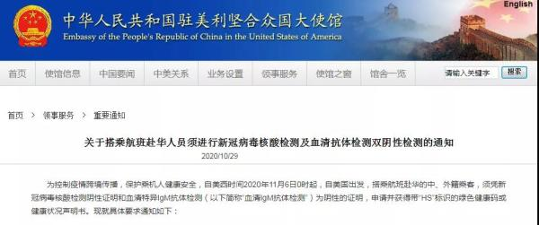
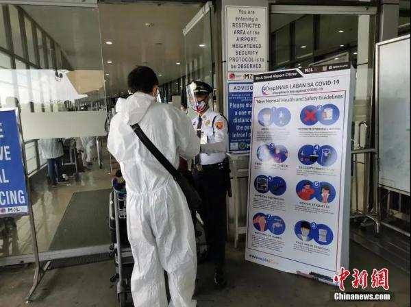
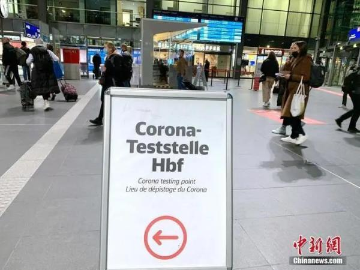
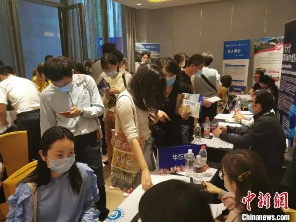

中国侨网11月1日电 题：11月新规来了！影响侨胞们的生活和出行
进入11月，海外新冠肺炎疫情仍在持续，第二波疫情来势汹汹，新冠肺炎确诊人数不断攀升，多国政府也陆续出台了严格的防控措施，加强民众外出管理。
11月将有哪些和华侨华人、留学生等密切相关的新规和动态？小侨为您集中梳理，敬请收藏！
出入境动态
美国赴华航班乘客11月6日起须凭双检测证明登机
近日，中国驻美国、英国、法国、意大利、阿根廷等多个国家的大使馆发布通知，搭乘航班赴华的中、外籍乘客，须凭双检测证明登机。
据中国驻美国大使馆消息，自美西时间11月6日0时起，自美国出发，搭乘航班赴华的中、外籍乘客，须凭登机前48小时内取得的新冠病毒核酸检测阴性证明和血清特异IgM抗体检测阴性的证明，申请并获得带“HS”标识的绿色健康码或健康状况声明书。

英国赴华航班乘客11月7日起须凭双检测证明登机
自2020年11月7日起，自英国出发，搭乘航班赴华的中国、外籍乘客，须凭新冠病毒核酸检测阴性证明和血清特异性IgM抗体检测阴性证明(48小时内取得)，申领带“HS”标识的绿色健康码或健康状况声明书。
法国赴华航班乘客11月6日起须凭双检测证明登机
自11月6日起，自法国搭乘航班赴华的中、外籍乘客，须凭登机前2天内在法国采样的新冠病毒核酸检测阴性证明和血清特异性IgM抗体检测阴性证明登机，两者缺一不可。
意大利赴华航班乘客11月4日起须凭双检测证明登机
11月4日起，从意大利搭乘航班赴华的中、外籍乘客，须凭“双阴”证明(48小时内)，申请领取带“HS”标识的绿色健康码或健康状况声明书。
阿根廷赴华航班乘客11月7日起须凭双检测证明登机
11月7日起，从阿根廷乘航班赴华的中、外籍乘客，须凭“双阴”证明(48小时内)，申领带“HS”标识的绿色健康码或健康状况声明书。
新加坡：11月6日起解除对来自中国大陆旅客的入境限制
新加坡民航局29日宣布，从11月6日起将解除对来自中国大陆旅客的入境限制，两地间旅游将恢复，新冠病毒检测结果呈阴性的旅客抵境后无须隔离。

菲律宾：允许投资签证外国人11月1日起入境
当地时间10月23日，菲律宾宣布11月1日起放宽部分旅行限制，持投资签证外国人可以入境，菲律宾公民出境无需接受新冠抗原检测。
海外生活动态
法国：重新实施禁足措施
法国宣布从10月30日零点起，法国将重新实施禁足措施。除公共服务、食品店等商业设施外，餐厅、酒吧等非必要商业场所将关闭。民众出行需携带出行证明，私人聚会和公共集会将全部禁止。
德国：11月2日起全国“封城”一个月
德国从11月2日起在全国范围实施部分封锁隔离，直至11月底。健身房、影剧院、餐馆和酒吧关闭，但允许外卖；学校和幼儿园不关门；社交接触规定不能超过两户人家、最多10人；旅游暂停。

意大利：宵禁等新限制措施持续至11月24日
意大利总理孔特宣布从10月26日至11月24日实施宵禁等新限制措施，包括禁止酒吧、咖啡馆、餐厅、冰淇淋店等每天18时后继续营业；关闭电影院、音乐厅、健身房、游泳馆等。
菲律宾：马尼拉等地维持“一般社区隔离”至11月底
当地时间10月27日，菲律宾总统杜特尔特在录播讲话中宣布，首都大马尼拉地区和其他六个地区维持“一般社区隔离(GCQ)”至11月底。
柬埔寨：国立学校将于11月2日全面复课
柬埔寨教育、青年和体育部部长洪尊那隆27日签发通告宣布第三阶段学校复课安排，允许幼儿园至大学的各级国立教育机构于11月2日全面复课。
澳大利亚：维多利亚州有望在11月8日进一步“解封”
澳大利亚维多利亚州州长安德鲁斯27日表示，如果疫情持续好转，有望在11月8日进一步“解封”。根据维州卫生部门27日发布的最新疫情数据，该州已连续两天没有新增确诊病例。
国内新规
第七次全国人口普查进入正式登记阶段
2020年11月1日零时起，中国开始开展第七次全国人口普查标准调查。本次全国人口普查将采取电子化方式开展普查登记。同时，还倡导普查对象自主填报的方式，鼓励大家使用手机等移动终端自行申报个人和家庭信息。
教育部：11月起取消《留学回国人员证明》
自2020年11月1日起，取消《留学回国人员证明》。自10月1日起，驻外使领馆不再受理开具申请。9月30日前已提交申请的，驻外使领馆根据留学人员意愿提供相应服务。已经受理、使领馆开具时间晚于11月1日的，《留学回国人员证明》仍然有效。

公安部：70岁以上老人也可申请驾照
10月22日，公安部召开新闻发布会，通报“异地办”“便捷办”“网上办”等三个方面12项公安交管优化营商环境新措施。新措施规定，放宽小型汽车驾驶证申请年龄，取消申请小型汽车、小型自动挡汽车、轻便摩托车驾驶证70周岁的年龄上限。
来源：中国新闻网、中国侨网、新华网、央视新闻客户端、中国驻各国使领馆网站等
作者：吴侃